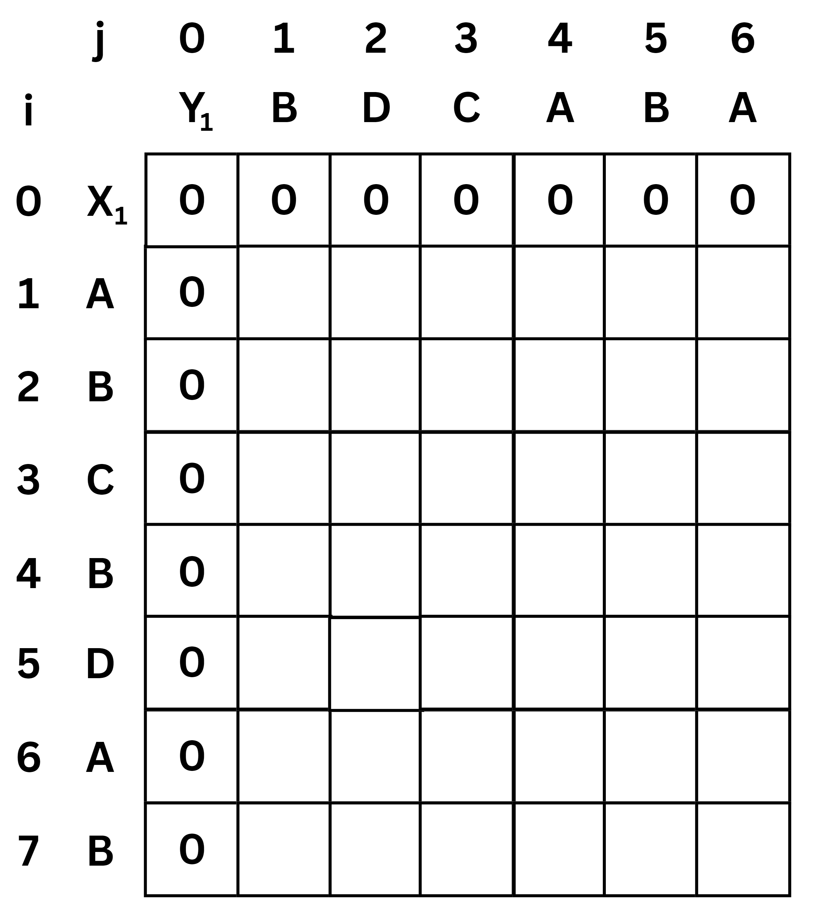
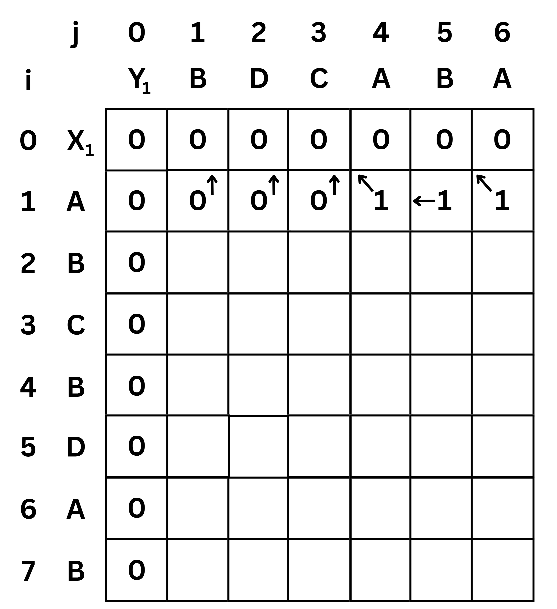
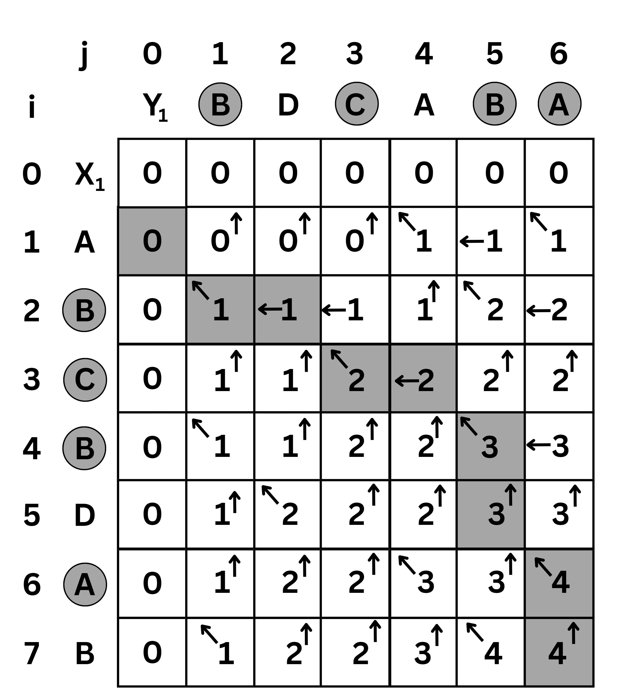
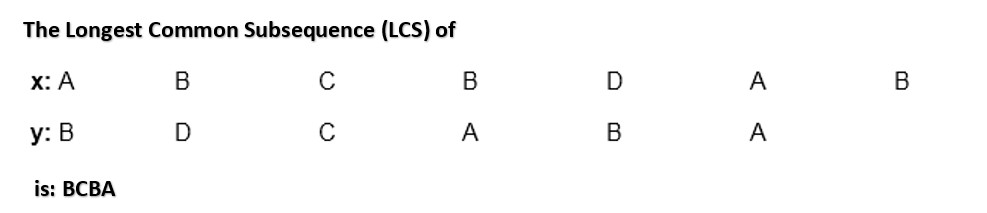

Given two sequences X [1...m] and Y [1.....n]. Find the longest common subsequences to both.
Here X = { A , B, C, B, D, A, B } and Y = { B, D, C, A, B, A }
m = length [ X ] and n = length [ Y ]
m = 7 and n = 6
Here x1 = x [ 1 ] = A and y1 = y [ 1 ] = B
x2 = B y2 = D
x3 = C y3 = C
x4 = B y4 = A
x5 = D y5 = B
x6 = A y6 = A
x7 = B
Now fill the values of c [ i, j ] in m x n table.
Initially, for i = 1 to 7
c [ i , 0 ] = 0
For j = 0 to 6
c [ 0 , j ] = 0
That is:

Now for i = 1 and j = 1
x1 and y1 we get x1 ≠ y1 i.e. A ≠ B
And c [ i – 1 , j ] = c [ 0 , 1 ] = 0
c [ i , j – 1 ] = c [ 1 , 0 ] = 0
That is,
c [ i – 1, j ] = c [ i, j – 1 ] so c [ 1 , 1 ] = 0 and b [ 1 , 1 ] = ' ↑ '
Now for i = 1 and j = 2
x1 and y2 we get x1 ≠ y2 i.e. A ≠ D
c [ i – 1 , j ] = c [ 0 , 2 ] = 0
c [ i, j – 1 ] = c [ 1 , 1 ] = 0
That is,
c [ i – 1 , j ]= c [ i , j – 1 ] so c [ 1 , 2 ] = 0 and b [ 1 , 2 ] = ' ↑ '
Now for i = 1 and j = 3
x1 and y3 we get x1 ≠ y3 i.e. A ≠ C
c [ i – 1 , j ] = c [ 0 , 3 ] = 0
c [ i , j – 1 ] = c [ 1 , 2 ] = 0
That is,
so c [ 1 , 3 ] = 0 and b [ 1 , 3 ] = ' ↑ '
Now for i = 1 and j = 4
x1 and y4 we get. x1 = y4 i.e A = A
c [ 1, 4 ] = c [ 1 – 1 , 4 – 1 ] + 1 = c [ 0 , 3 ] + 1 = = 0 + 1 = 1
c [ 1 , 4 ] = 1
b [ 1 , 4 ] = ' ↖ '
Now for i = 1 and j = 5
x1 and y5 we get x1 ≠ y5
c [ i – 1 , j ] = c [ 0 , 5 ] = 0
c [ i , j – 1 ] = c [ 1 , 4 ] = 1
Thus,
c [ i , j – 1 ] > c [ i – 1 , j ] i.e. c [ 1 , 5 ] = c [ i , j – 1 ] = 1. So b [ 1 , 5 ] = '←'
Now for i = 1 and j = 6
x1 and y6 we get x1 = y6
c [ 1 , 6 ] = c [ 1 – 1, 6 – 1 ] + 1 = c [ 0 , 5 ] + 1 = 0 + 1 = 1
c [ 1 , 6 ] = 1
b [ 1 , 6 ] = ' ↖ '

Now for i = 2 and j = 1
We get x2 and y1 B = B i.e. x2 = y1
c [ 2 , 1 ] = c [ 2 – 1, 1 – 1 ] + 1 = c [ 1 , 0 ] + 1 = 0 + 1 = 1
c [ 2 , 1 ] = 1 and b [ 2 , 1 ] = ' ↖ '
Similarly, we fill the all values of c [ i , j ] and we get ,

